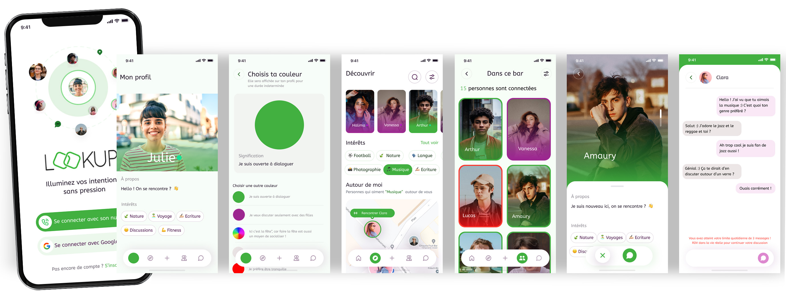
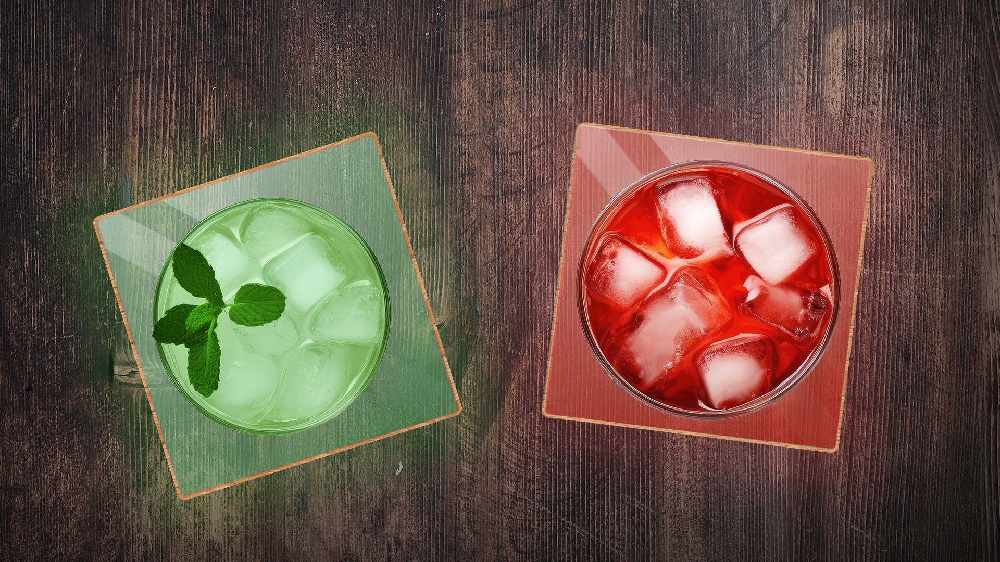
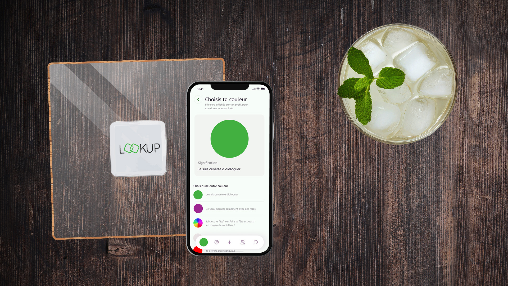

Projects > LOOKUP
LOOKUP
Ready to light up your encounters?
Context & Objectives
Loneliness is on the rise among young adults, with a staggering 600% increase in chronic loneliness among those under 35 over the past decade. Today, 62% of young adults feel lonely. In a world where 60% of encounters now happen through dating apps, it's become increasingly difficult to initiate spontaneous and natural interactions in real life.
Strategy & Insight
Studies show that while many young adults frequently go to social places like bars or cafés intending to make connections, these interactions often don’t happen. Despite being in social spaces, isolation remains, and opportunities to connect are limited. A 2023 survey on loneliness and isolation found that around 21% of young people regularly feel alone, and while bars offer potential for socializing, loneliness still persists in those environments. Our challenge was to make social interactions easier and more natural. How can we help people make spontaneous, genuine connections in public spaces when social isolation and fear of rejection are so prevalent?
Creative Solution

LOOKUP is an innovative solution that makes social encounters simple and natural in places like bars and cafés. It’s based on a smart, discreet coaster designed to help users easily express their mood and openness to conversation—while fully respecting personal privacy. The LOOKUP coaster uses an intuitive color code that lets users clearly and non-intrusively signal their intentions:
- Red: You prefer to be left alone, no conversations today.
- Green: You’re open to chatting and making new connections.
- Multicolor: You’re ready to party and talk to everyone!
- White: You prefer not to disclose your mood.
- Purple: You’re a woman and would like to connect with other women.
- Orange: You’re a man and would like to connect with other men.
At a glance, intentions are clear and opportunities to connect become simple and obvious. This color-coded system allows everyone to express themselves while respecting each other’s boundaries.

LOOKUP App Features
- See nearby locations and activity: From home, the LOOKUP app lets you browse locations equipped with coasters in your city, along with the number of people currently there. You can also preview the color statuses displayed on users’ coasters—getting a feel for the vibe before stepping in. Profiles stay hidden until you’re physically on-site.
- Discover profiles in social places: Once you're at a participating bar or café, you can see nearby profiles and their vibe based on coaster color. That’s when real conversations can begin.
- Find common interests: LOOKUP helps you discover shared interests like movies or travel, making it easier to strike up a conversation on topics you already enjoy.
- Send up to three messages before meeting: For shy folks, the app allows sending up to three messages before meeting face-to-face, easing the transition from digital to real-life.
- Built-in safety alert: Each coaster has a discreet panic button that alerts the staff if needed. Meeting people is great—doing it in a safe space is even better.
Benefits for Establishments
The LOOKUP system offers benefits not just for users, but also for venues like bars and cafés. Here's why:
- Attract and retain a younger, modern clientele seeking fresh social experiences.
- Increase revenue by drawing in new patrons and offering a richer experience.
- Stand out with a marketing edge, positioning the venue as an innovative social hub.
- Match the expectations of modern customers, who crave tech and interactive experiences.
Our goal wasn’t just to create a product, but to reinvent the way people meet in real life. More
than just an object, LOOKUP is a true invitation to connect in a simple, natural, and
pressure-free way.
So, ready to light up your encounters?


Team
Théa Jacquet, Lilou Legrand, Alice Aubert de Vincelles, Mathilde Gilliard, Capucine Delaplace et Tiphaine Jeannot
Sources
SOLITUDES 2023 (RE)CONNECTED THROUGH PLACES:
Download
the study in PDF
Who suffers from isolation in France?
Read the article on Observation Société